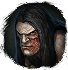
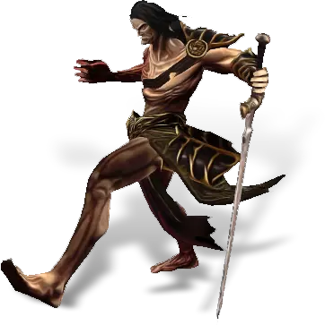
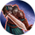
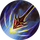

Открыть в интерактивной вики →

| Уровень | лёгк. 170 / норм. 170 / тяжел. 210 |
|---|---|
| Зоны атаки | ближняя, дальняя, ментальная |
| Шанс дропа 100% — уровни | лёгк. 1-125 / норм. 1-125 / тяжел. 1-140 |
| Шанс дропа 90% — уровни | лёгк. 126+ / норм. 126+ / тяжел. -- |
| Шанс дропа 70% — уровни | -- |
| Группа боссов | Ужас |
| Сила (PvE) | норм. 18 678 / тяжел. 25 252 |
| Аспект арены | Gherudu |
| Здоровье | лёгк. 115 000 / норм. 115 000 / тяжел. 170 000 |
| Мана | 20 000 |
| Выносливость | 20 000 |
Команда
Навыки
Устойчивость к рубящему урону Устойчивость к дробящему урону Устойчивость к кровотечению  Разворот
Разворот  Булавка в глаз
Булавка в глаз  Отравление
Отравление  Отупление
Отупление  Явление смерти Теневая аура
Явление смерти Теневая аура  Обычная атака
Обычная атака  Кровотечение
Кровотечение  Ледяной снаряд
Ледяной снаряд  Массовая аура холода
Массовая аура холода  Теневой Удар
Теневой Удар  Замораживание
Замораживание  Таран
Таран  Призыв
Призыв  Удар Головой
Удар Головой
Разворот Булавка в глаз Отравление Отупление Явление смерти Теневая аура Обычная атака Кровотечение Ледяной снаряд Массовая аура холода Теневой Удар Замораживание Таран Призыв 
Вымеренный УдарУдар Головой 
Стратегический выстрелДроп
 Ворлинский Дукат
Ворлинский Дукат  Глиф Подмастерья
Глиф Подмастерья 
 Путь ужаса
Путь ужаса 


 V-IX
V-IX  Гроссмейстерский глиф
Гроссмейстерский глиф  Даймонит 250
Даймонит 250 | Рары | Синергетики | Эпики | |||
 Рары Рары  Рары Рары  Рары Рары  Рары Рары | 80-100 ур. |  Эпики Эпики | |||
Прочее:  Ворлинский Дукат Ворлинский Дукат  Глиф Подмастерья Глиф Подмастерья  Путь ужаса Путь ужаса | |||||
Требования для входа
Путь по картам
Статистика
 |  | ||||
| Уровень: 170 | Уровень: 210 | ||||
Здоровье: 115 000 Мана: 20 000 Выносливость: 20 000 | Здоровье: 170 000 Мана: 20 000 Выносливость: 20 000 |
Умения
| Удар Головой Вымеренный Удар Кровотечение Таран Замораживание Ранение Обычная атака | Ледяной снаряд Теневой Удар | Теневая аура Аура холода Удар в живот Боевой Клич Отупление Булавка в глаз Явление смерти Заражение Отравление |
Иммунитеты / особые умения
| Групповой разворот Призыв: Фанатик Устойчивость к кровотечению Устойчивость к рубящему урону Устойчивость к дробящему урону Устойчивость к ближним атакам Иммунитет к дальним атакам Иммунитет к ментальным атакам |
Локация
Дворец Мораны
Подземелья